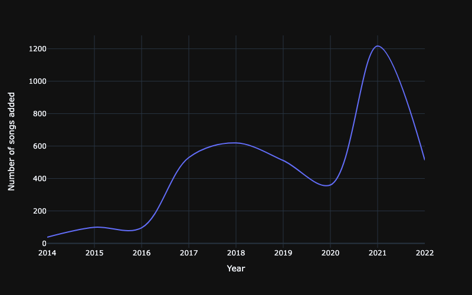
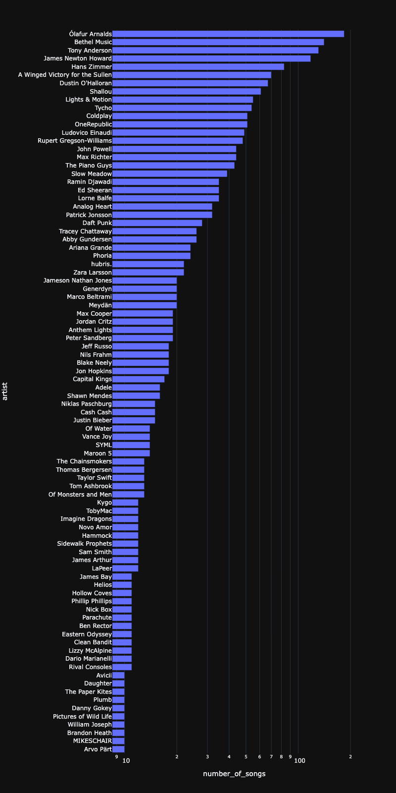
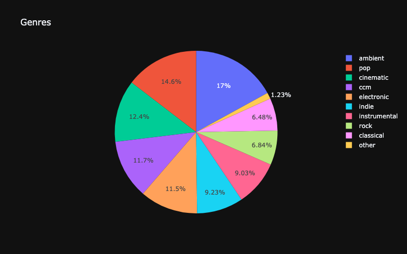
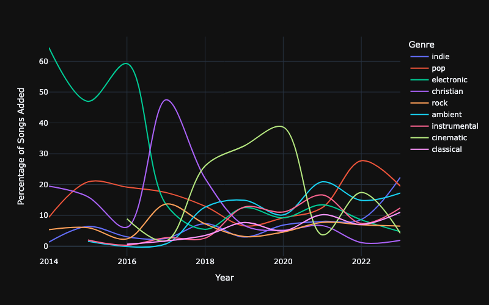
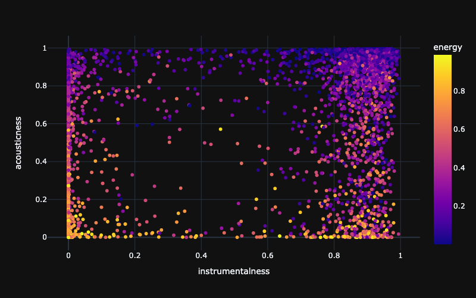

Favorite Music
This document is an analysis and visualization of my music preferences using data collected from my Spotify account using the official API. I analyzed and collated with python, and generated various graphs using plotly.
Summary
My current favorite genres are neo-classical, post-rock, instrumental, pop, indie, ambient, and cinematic—not necessarily in that order.
Songs discovered over time
This chart shows the number of songs I've added to my library over time.

Top Artists
This is a chart of my top artists, ordered by the number of times one of their songs appears in one of my spotify playlists. Some artist's numbers are inflated by a single song appearing in multiple playlists. It's also biased towards film composers because I tend to add entire movie soundtracks into playlists as opposed to individual songs, like in other genres. The x-axis is a log scaled from 10 to 100.

Genre Proportions
This chart shows the distribution of genres in my playlists.

Genre Preferences Over Time
This chart plots how the percentage of songs in each genre I've added to my playlists has changed over the last decade. As you can see, my genre preferences usually shift significantly every few years. My preferences have also become more diverse and balanced over time.

Features
This chart relates various features of the songs in my playlists as detected by Spotify, specifically the instrumentalness, acousticness, and energy level of the songs.

Genre Highlights
This is a set of small playlists that feature from highlights from each of my favorite genres.
Neo-classical
This genre combines the instrumentation of classical music which modern composition styles, sound design, and production techniques.
Post-rock
This genre combines the instrumentation of rock music with more modern, clean, ambient guitar tones, modern production, and tends to be focused more on texture than melody. Songs in this genre are often instrumental.
Pop
You all know what this is.
Indie
You all know what this is.
Ambient
This genre is characterized by long reverb tails, adequate space, slow tempos, and minimalism. My favorite songs in this genre often contain a mix of synthesizer and string elements.
Chill Electronic
This is the more chill side of electronic music.
Cinematic
Songs in the genre often end up in movies, and genenerally contain large orchestras.
String Section
This is a selection of songs made with small string ensembles.
Choir
The human voice.
Modern Piano
Slow modern piano music.